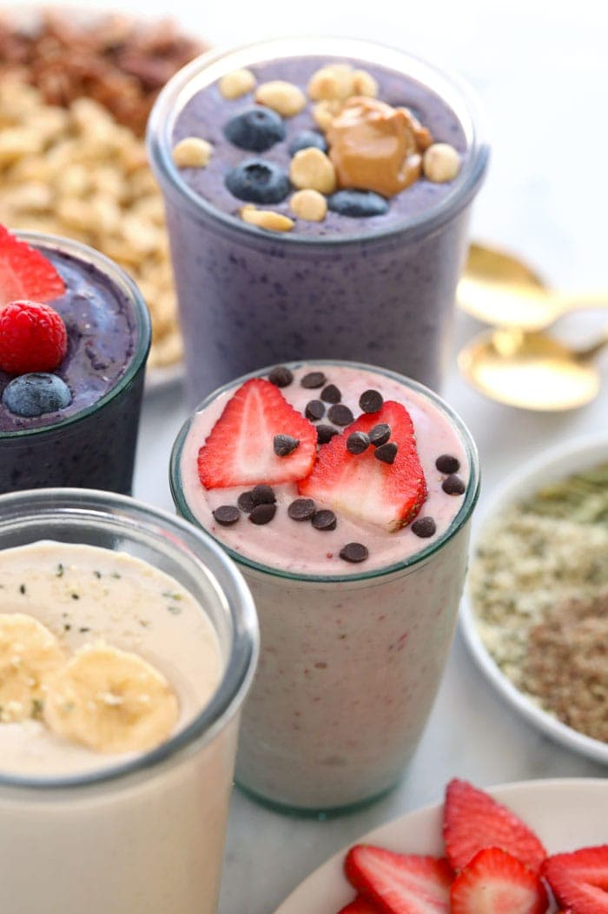

Protein Shake

Description
If you’re anything like us (hello busy moms!), you’re trying to find different ways to sneak protein into your diet. Protein shakes are one of the fastest and easiest ways to do so…plus most FFF protein shake recipes taste like dessert.
While protein powder is our favorite source of protein because you can get around 25g of protein per serving, we’re also sharing other protein options in this post along with many flavor variations.
Ingredients
1 cup frozen strawberries and bananas any kind of fruit works
1 serving vanilla protein powder we used Garden of Life Whey
1/2 cup plain Greek yogurt we used 2%
1/2 – 1 cup plain, unsweetened almond milk
Steps
- Add all of the ingredients into a high-speed blender.
- Blend on high for 1 minute, stopping to scrape the sides, if needed. Add more almond milk to thin things out as needed.
- Serve immediately